Getting Started
How to log in, find your way around, and understand what you can and cannot do.
1. Logging in
- Open the application (desktop app, or the website link given to you).
- Enter your Email Address and Password.
- Click Login.
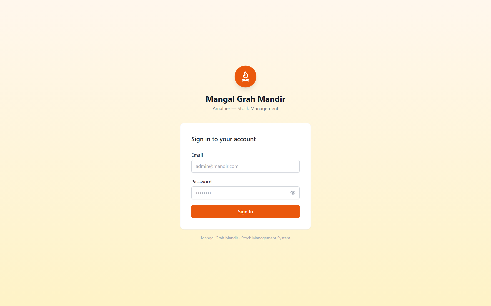
2. Finding your way around
Every screen has the same layout:
- Left sidebar — the main menu. Modules are grouped (Purchases, Stock Movement, Inventory, Payments, Expenses, Mahaprasad, Donations, Assets, Reports, Masters, Admin). Click a group to expand it.
- Top bar — notifications bell and your name/role menu (Profile, Change Password, Logout).
- Main area — the screen you are working on.
3. Things that work the same everywhere
- Required fields are marked with a red asterisk
*. You cannot save until they are filled. - Dates default to today. Many forms allow back-dated entries; a few (like donations and mahaprasad) do not allow future dates.
- Money is always in Rupees (₹).
- Export buttons (Export Excel / PDF / WhatsApp) appear on most lists and reports.
- Approval workflow — payments and expenses are first submitted, then a trustee approves them. Until approved they are "Pending".
Modules in this manual
Dashboard
Your home screen — a quick health check of the whole temple store.
Who uses it: Everyone. What you can do: view only (no data is entered here).
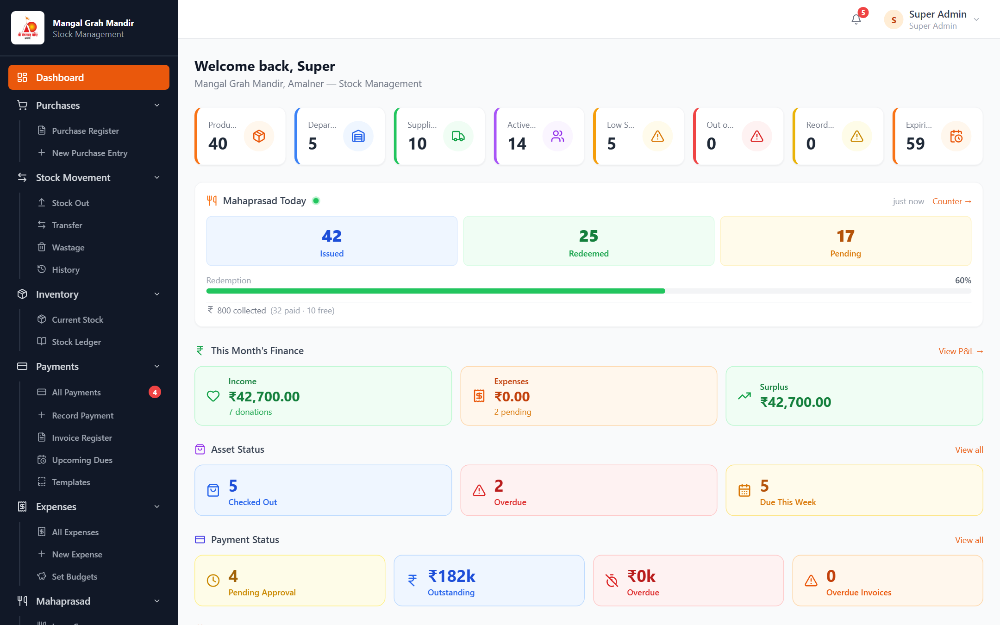
What you see
- Key numbers — Products, Departments, Suppliers, Active Users, and stock warnings (Low Stock, Out of Stock, Reorder Soon, Expiring within 30 days).
- This Month's Finance — Income, Expenses and Surplus/Deficit, with a View P&L → link.
- Asset Status — items checked out, overdue, and due this week.
- Payment Status — payments pending approval, outstanding and overdue amounts.
- Expiring Within 7 Days, Today's Activity, a 7-Day Stock Movement chart, Top Products, and Recent Transactions.
Purchases
Record goods bought from suppliers. This is how stock comes in.
Who uses it: Store keeper / store manager. Needs permission: create transactions.
2.1 Recording a new purchase
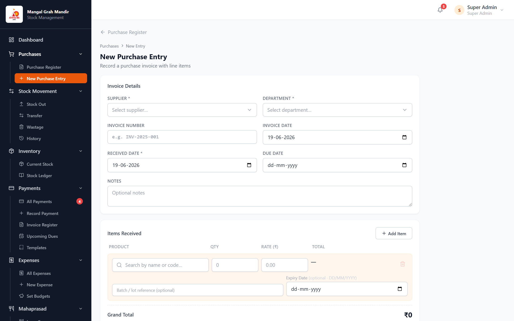
- Go to Purchases → New Purchase Entry.
- Select the Supplier * (the credit term fills the Due Date automatically).
- Select the Department * that is receiving the goods.
- Optionally enter the Invoice Number and Invoice Date; set the Received Date * (defaults to today).
- Under Items Received, for each item choose the Product *, enter Qty *, and optionally Rate (₹), batch reference and Expiry Date.
- Click Add Item to add more rows. The Grand Total updates automatically.
- Click Save Purchase Entry.
2.2 Purchase Register (viewing past purchases)
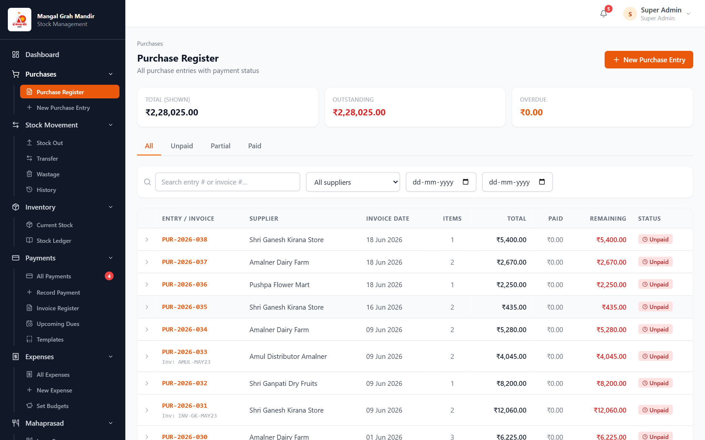
- Use the tabs All / Unpaid / Partial / Paid and search by entry or invoice number.
- Click a row to expand and preview its line items, then View full details →.
- On the detail screen you can Edit (only if no payment has been approved yet) or Void Entry with a reason. Voiding reverses the stock that was added.
Stock Movement
Record stock going out, moving between departments, or being wasted.
Who uses it: Store keeper, kitchen staff. Needs permission: create transactions.
3.1 Stock Out (issuing stock)
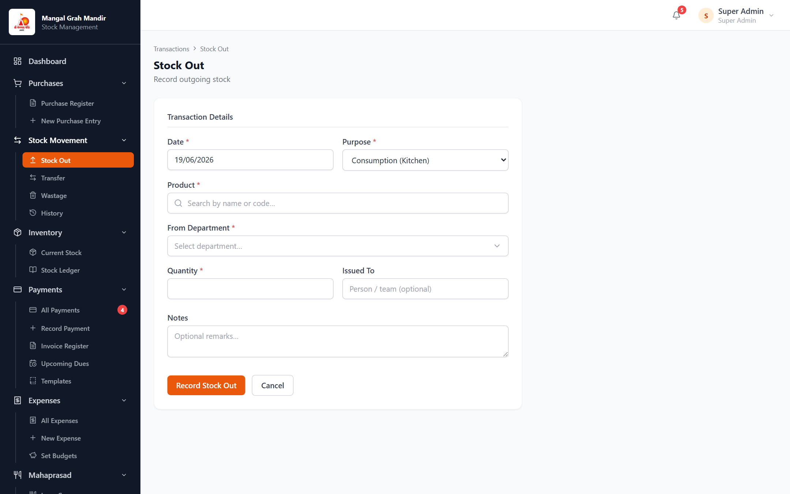
- Set the Date (defaults to today).
- Choose the Purpose: Consumption (Kitchen), Distribution (Prasadam), Offering / Puja, or Other.
- Select the Product and the From Department. The Current Balance shows; it turns red and says "(Low stock)" if at or below the minimum.
- Enter the Quantity (must be more than 0). Optionally fill Issued To and Notes.
- Click Record Stock Out. You are taken to Transaction History.
3.2 Transfer (between departments)
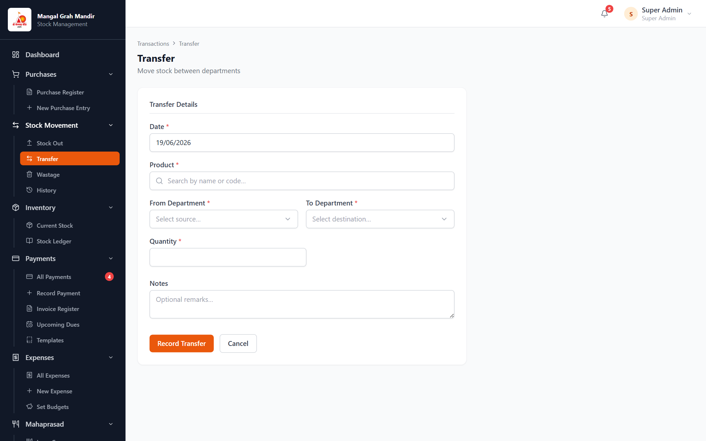
- Pick the Product, the From Department (source) and the To Department (destination).
- The Available in Source quantity is shown. Enter the Quantity to move and click Record Transfer.
3.3 Wastage (damaged / expired)
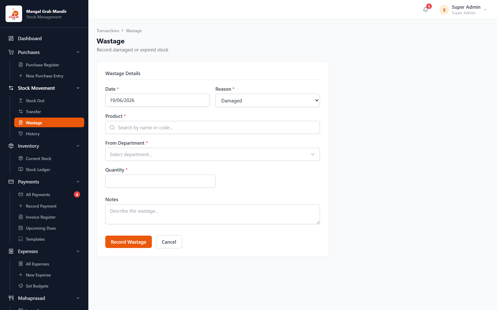
- Choose the Reason: Expired, Damaged, Spillage, Pest / Infestation, or Other.
- Select the Product and From Department, enter the Quantity, describe it in Notes, and click Record Wastage.
3.4 Transaction History
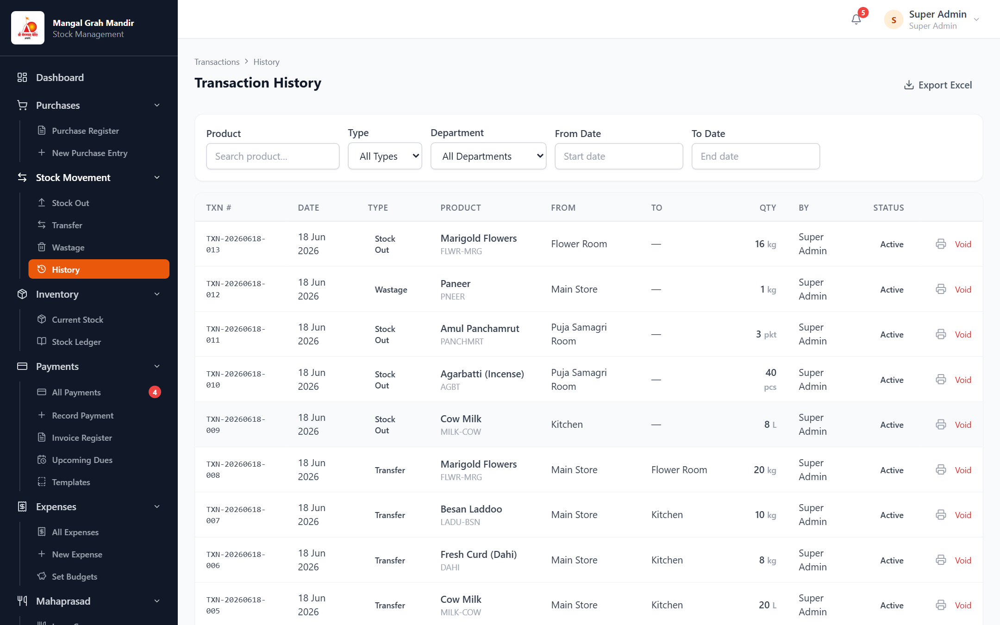
- Filter by Product, Type, Department and date range; Clear resets the filters.
- Print a single receipt with the printer icon, or Export Excel.
- To cancel a wrong entry, click Void, type the Reason for Voiding *, and confirm. Voiding restores the stock. (Requires delete permission.)
Inventory
See exactly how much of each item you have, and trace every movement.
Who uses it: Store keeper, managers. What you can do: view only.
4.1 Current Stock
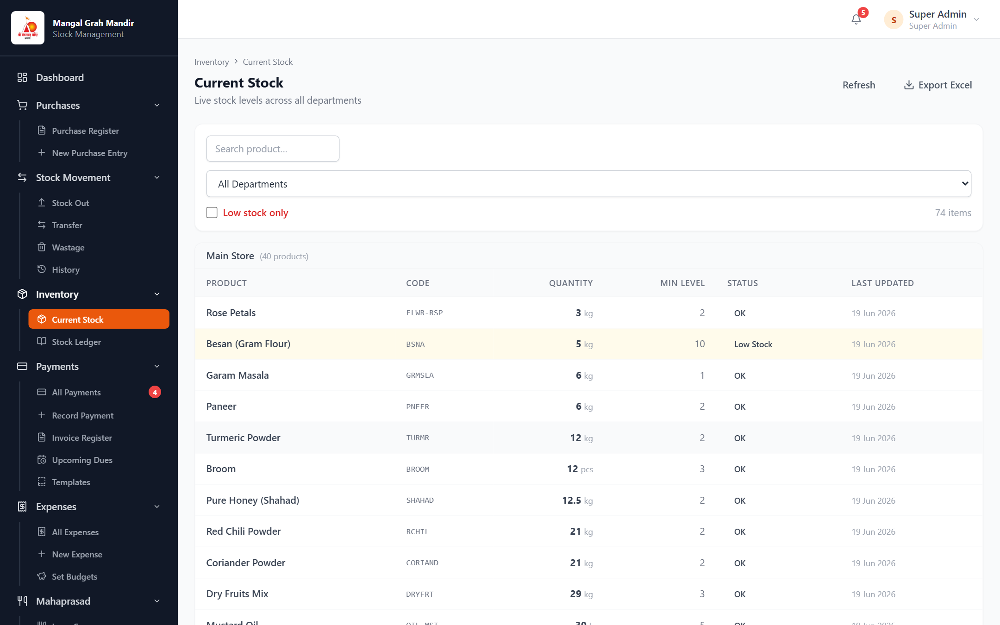
- Shows live quantities grouped by department. Search a product, filter by department, or tick Low stock only.
- Status is Out of Stock (zero), Low Stock (at or below minimum), or OK.
- Use Refresh for the latest, or Export Excel.
4.2 Stock Ledger
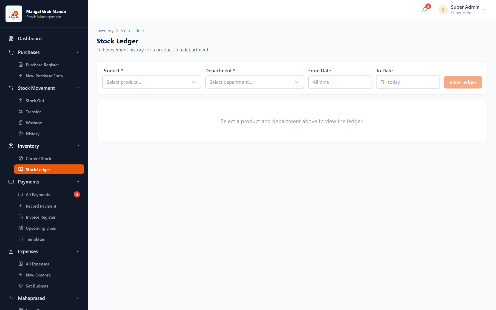
- Select a Product * and a Department * (both required), optionally a date range.
- Click View Ledger to see every In, Out, Transfer and Wastage with a running balance, opening and closing rows.
Supplier Payments
Pay suppliers against their invoices, and have trustees approve those payments.
Who uses it: Store manager (records) and trustees (approve). Needs permission: payments — write to record, approve + "Can Approve Payments" flag to approve.
5.1 Recording a payment
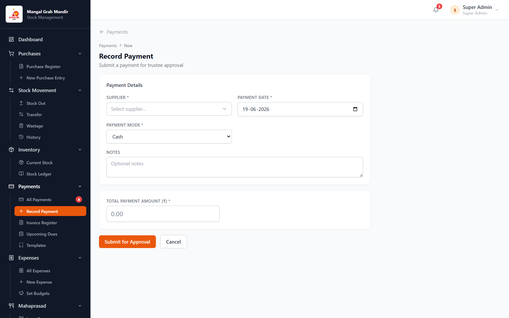
- Optionally start From Template (a saved supplier + mode combination).
- Choose the Supplier * and Payment Date *.
- Pick the Payment Mode * (Cash, UPI, Online, NEFT, RTGS, Cheque). For non-cash modes, fill the Cheque No. * or Reference / UTR No. *.
- Allocate the payment: click an unpaid invoice to add it, or choose Advance / No Invoice. For each line set how much you are Paying Now (₹) *.
- Check the Total Payment Amount and click Submit for Approval.
- You may then Save Template for next time, or Skip.
5.2 Approving payments
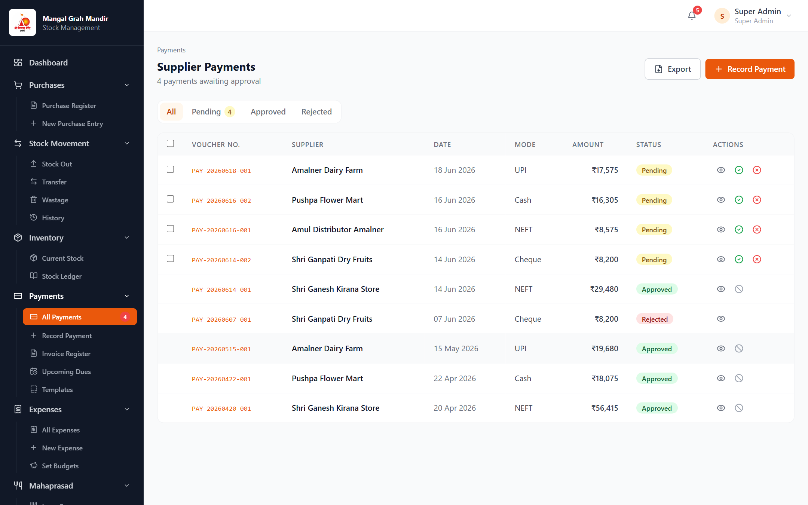
- Use the tabs All / Pending / Approved / Rejected.
- Approve: click the green tick → add an optional note → Approve.
- Reject: click the red cross → type a required Reason * → Reject.
- Bulk approve: tick several rows → Approve N Selected.
- Void an approved payment with a reason if it was made in error.
5.3 Other payment screens
| Screen | What it shows |
|---|---|
| Invoice Register | Every purchase invoice with its payment status (Unpaid / Partial / Paid). Expand a row for items and payment history. |
| Upcoming Dues | Invoices due soon or overdue. Pick "next 7/15/30/60 days" and click Pay Now → on any row. |
| Templates | Saved payment setups you can reuse with one click. |
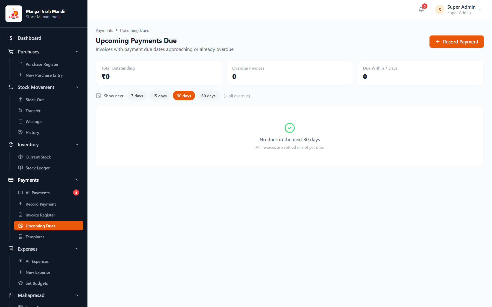
Expenses & Budgets
Record day-to-day expenses (salaries, electricity, repairs) and set monthly budgets.
Who uses it: Office staff (record), trustees (approve), admin (budgets). Needs permission: payments — write to record, approve to set budgets.
6.1 Recording an expense
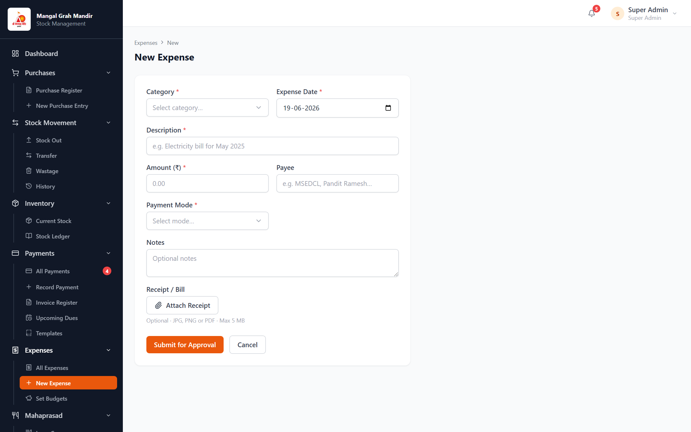
- Choose the Category and Expense Date.
- If the category is Salary, pick the Staff Member — the payee, amount and description fill in automatically.
- Enter the Description, Amount (₹), Payee, and Payment Mode. For Cheque add the Cheque Number; for UPI add the UTR / Reference.
- Optionally Attach Receipt (photo or PDF, up to 5 MB).
- Click Submit for Approval.
6.2 Expense list & budgets
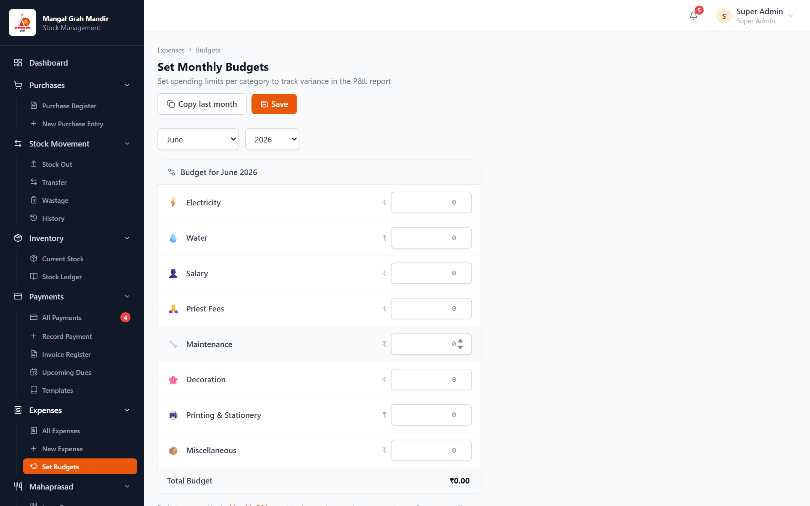
- All Expenses — filter by date, category and status; Export PDF. Click an entry number to open its detail.
- Set Budgets — choose the month/year, optionally Copy last month, type the rupee limit per category, then Save. These limits feed the Monthly P&L report.
Mahaprasad
Issue prasad coupons at the counter, collect money, and redeem coupons at the serving point.
Who uses it: Counter / kitchen staff. Needs permission: mahaprasad — issue and redeem.
7.1 Issuing coupons (the counter)
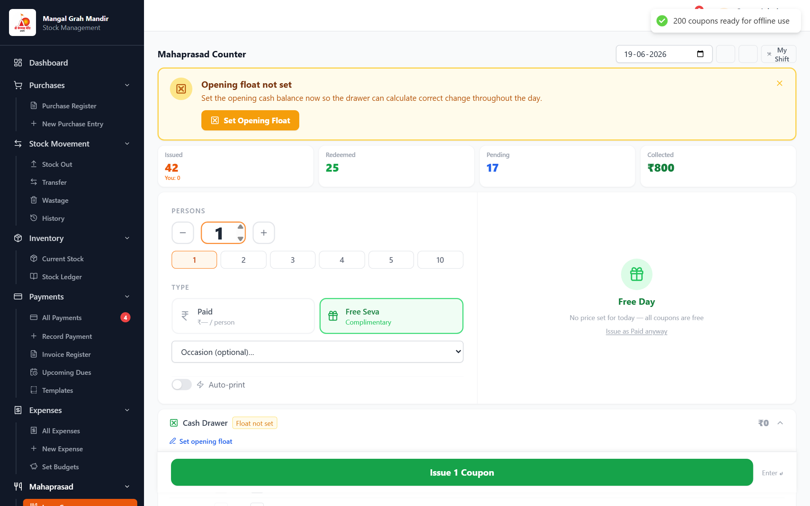
- At the start of the day, click Set Opening Float and enter the cash in the drawer (so change is calculated correctly).
- Set the number of Persons using the − / + buttons or the preset numbers.
- Choose Paid or Free Seva (for free, you may pick an Occasion).
- For Paid: choose Cash or UPI. For cash, tap what the customer pays with — the change is shown automatically.
- Click Issue Coupon (or just press Enter). The coupon prints if a printer is set up.
7.2 Redeeming coupons
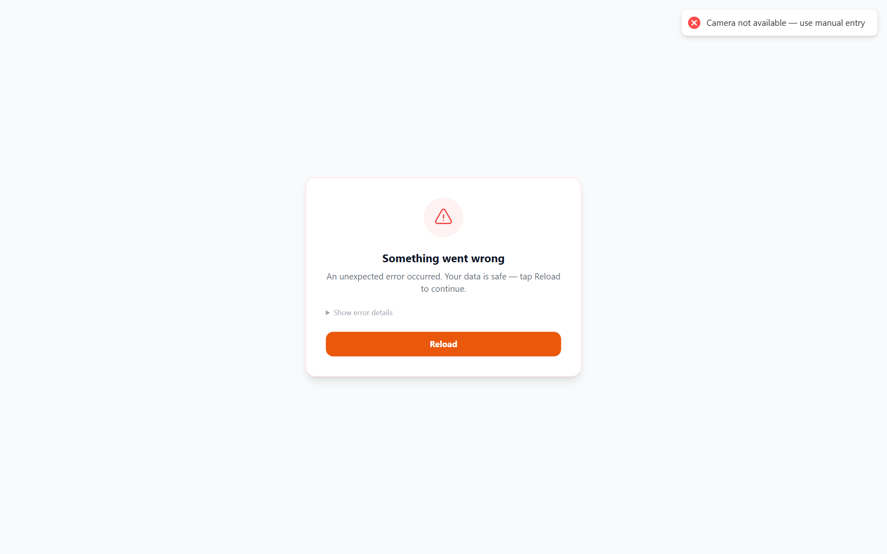
- Choose Scan QR (redeems automatically when scanned) or Manual Entry.
- For manual, type the Coupon Number (e.g.
MP-20260611-001) and click Look Up. - Check the details, then click Mark as Redeemed. The screen resets for the next person.
7.3 History, Report & Occasions
| Screen | Use |
|---|---|
| History | Search/filter every issued coupon, reprint, or export to Excel. |
| Report | Daily / Monthly / Staff / Wastage analytics. The Daily tab has Copy for WhatsApp for sharing the day's summary. |
| Occasions | Manage the list of preset occasion names used for free coupons. |
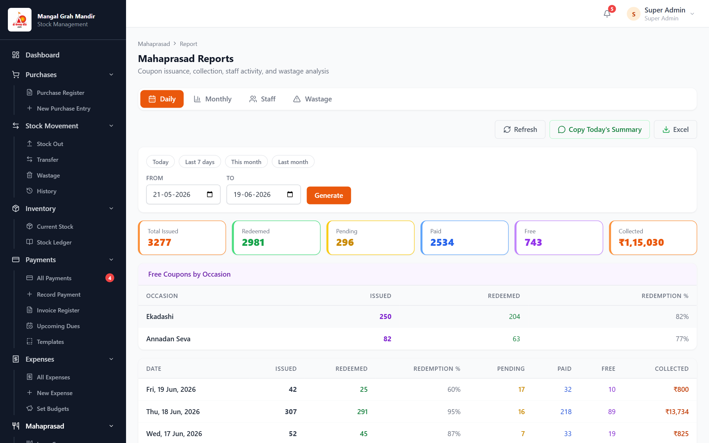
Donations
Record cash and in-kind donations, print receipts, and issue 80G receipts.
Who uses it: Office / donation desk. Needs permission: donations — write.
8.1 Recording a donation
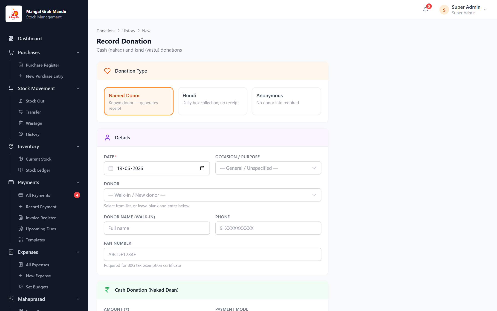
- Choose the Donation Type: Named Donor, Hundi (collection box), or Anonymous.
- Set the Date * (cannot be in the future) and optional Occasion / Purpose.
- For a Named Donor, select an existing donor or type the name and phone. If the phone matches a past donor, click Use Details. Add a PAN Number to enable the 80G Eligible toggle.
- For a cash donation, enter the Amount (₹), Payment Mode and reference.
- For a kind donation, click Add Item and enter the item, quantity, estimated value and destination department.
- Click Record Donation, then Print Receipt if needed.
8.2 History & receipts
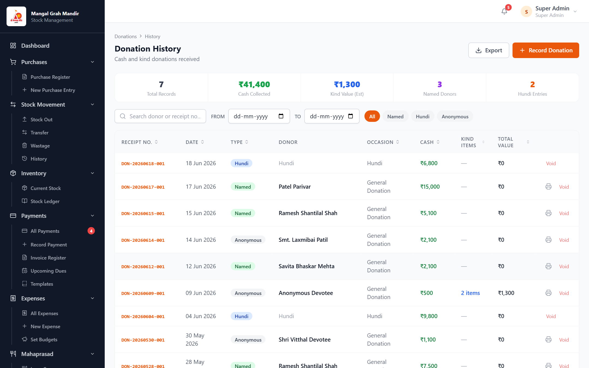
- Filter by donor/receipt number, date, and type (Named / Hundi / Anonymous).
- Click a row for the full detail, where you can Print, download a Receipt PDF, or — for eligible named donations — an 80G Receipt.
- Use Void with a reason to cancel a wrong entry; Export to Excel or PDF.
Assets
Track temple items (utensils, mandap, furniture) and manage who has borrowed them.
Who uses it: Store keeper, asset in-charge. Needs permission: assets — write to manage assets, manage to handle returns/reminders.
9.1 The asset list
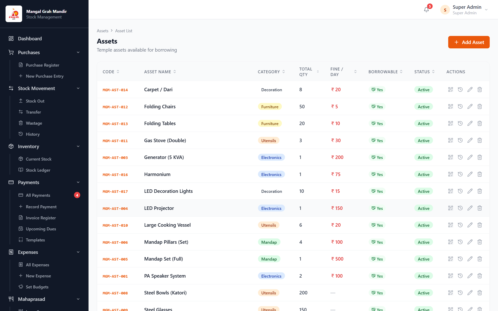
- Shows every asset with code, category, total quantity, fine-per-day and whether it is borrowable.
- Use Add Asset to create one: enter the Asset Name, Category, Total Quantity, Fine Per Day (₹), and tick Available for Borrowing.
9.2 Lending an asset (Borrow Request)
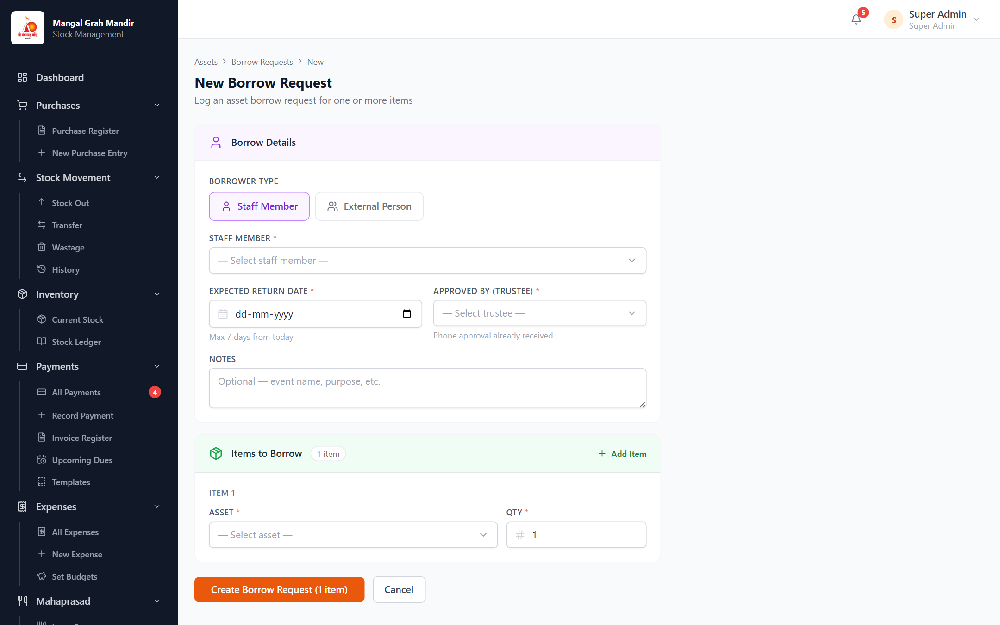
- Choose the Borrower Type: a Staff Member or an External Person (for external, capture name, phone and ID proof).
- Set the Expected Return Date (limited to the maximum borrow days set in Settings).
- Choose the Approved By (Trustee).
- Add one or more assets with quantities (availability is shown live), then click Create Borrow Request.
9.3 Returns & reminders
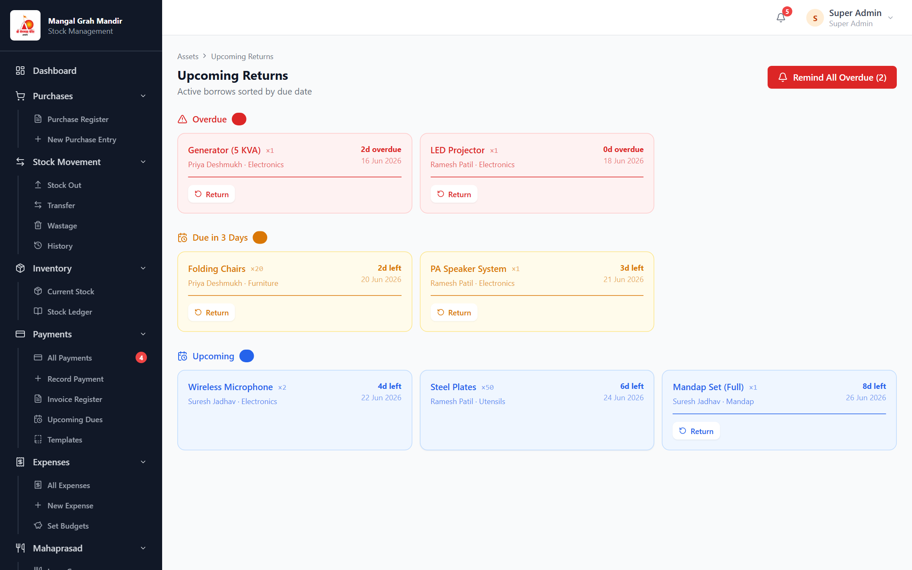
- Upcoming Returns groups borrows into Overdue, Due Today, Due in 3 Days and Upcoming. Click Return on a card, or Remind All Overdue to message everyone late.
- On return, set the Actual Return Date and Condition (Good / Fair / Damaged). If late, a fine is calculated automatically — you can Apply or Waive it with a reason.
- Reports show utilization and fine collection, exportable to Excel/PDF.
Reports
Ready-made reports for daily operations, stock health, suppliers and finance. Most can be exported to PDF/Excel and several can be shared on WhatsApp.
Who uses it: Managers and trustees. What you can do: view, export, share.
| Report | What it tells you |
|---|---|
| Daily Movement | All stock in/out/transfer/wastage for a chosen day, with totals. |
| Low Stock Alerts | Items below minimum, grouped Out of Stock / Low / Reorder Soon. Share alerts on WhatsApp. |
| Expiring Stock | Batches already expired or expiring within 7–90 days. |
| Stock Valuation | Value of current stock at last purchase rate, with a grand total. |
| Supplier Report | Purchases grouped by supplier for a date range. |
| Supplier Aging | Outstanding supplier dues bucketed by how overdue they are. |
| Festival Cost | Stock consumed plus payments made over a festival period. |
| Consumption Trend | How much of a product is used each month, with an up/down trend. |
| Reorder Suggestions | Suggested order quantities based on average consumption vs current stock. |
| Monthly P&L | Income vs approved expenses for a month, net surplus/deficit, and budget-vs-actual. |
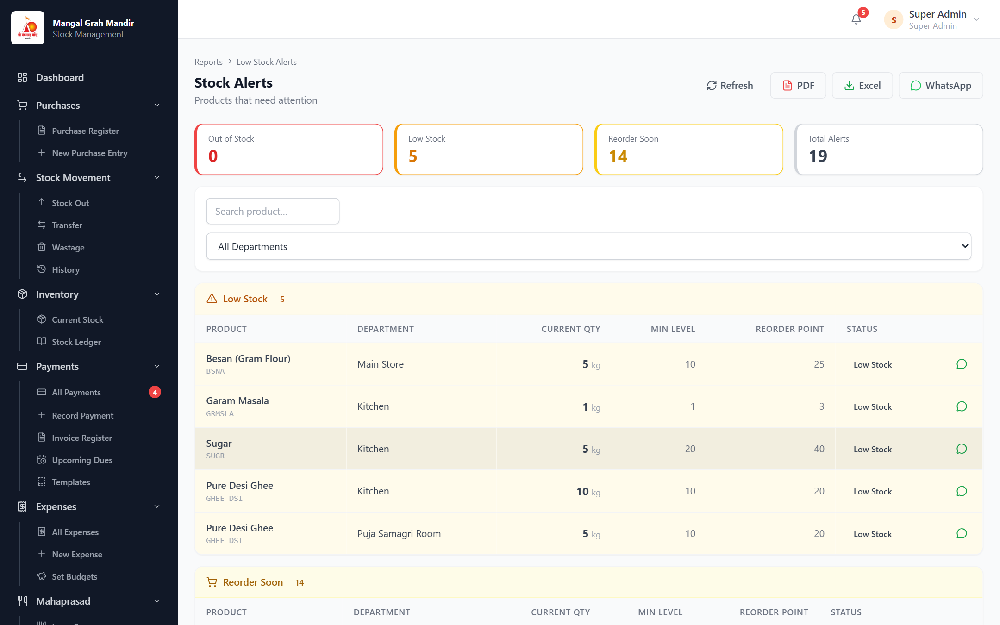
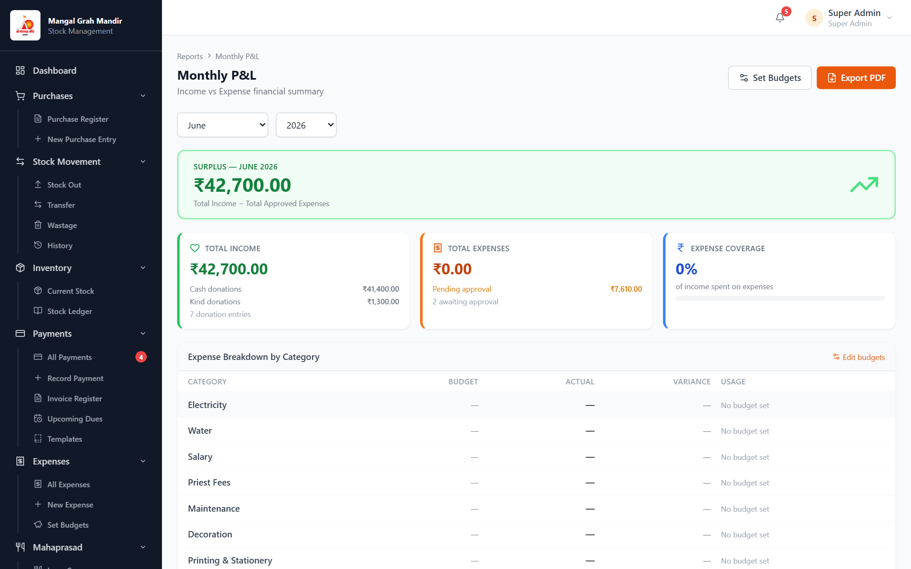
Each report has filters at the top (date range, department or product) and export buttons. Pick your filters, then export or share.
Masters (setup data)
The reference lists everything else depends on: products, departments, suppliers, categories, units and occasions. Set these up first.
Who uses it: Administrator / manager. Needs permission: masters — write.
11.1 Products
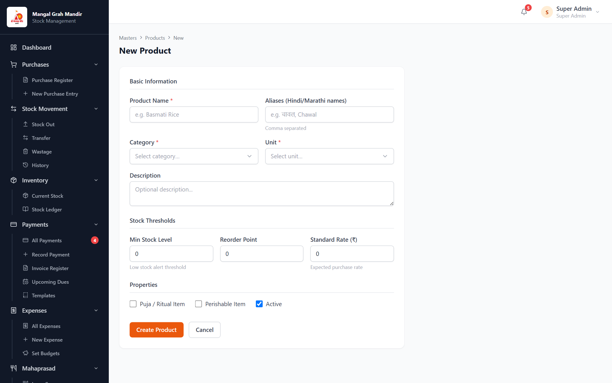
- Enter the Product Name, optional Aliases (Hindi/Marathi names), and choose a Category and Unit (all three are required).
- Optionally set Min Stock Level, Reorder Point and Standard Rate (₹), and tick properties like Puja / Ritual Item or Perishable Item.
- Click Create Product.
11.2 The other master lists
| List | What to fill |
|---|---|
| Suppliers | Name (required), type (Vendor/Donor/Both), contact, GSTIN/PAN, credit days, and one or more bank accounts for payments. |
| Departments | Name, a short Code (uppercase, up to 5 letters) and a type (Store, Kitchen, Puja, etc.). |
| Categories | Name and a short code; optionally a parent category to make a hierarchy. |
| Units | Name and symbol (e.g. Kilogram / kg) and a type (Weight, Volume, Count, Other). |
| Occasions | Preset occasion names used in Donations and Mahaprasad. |
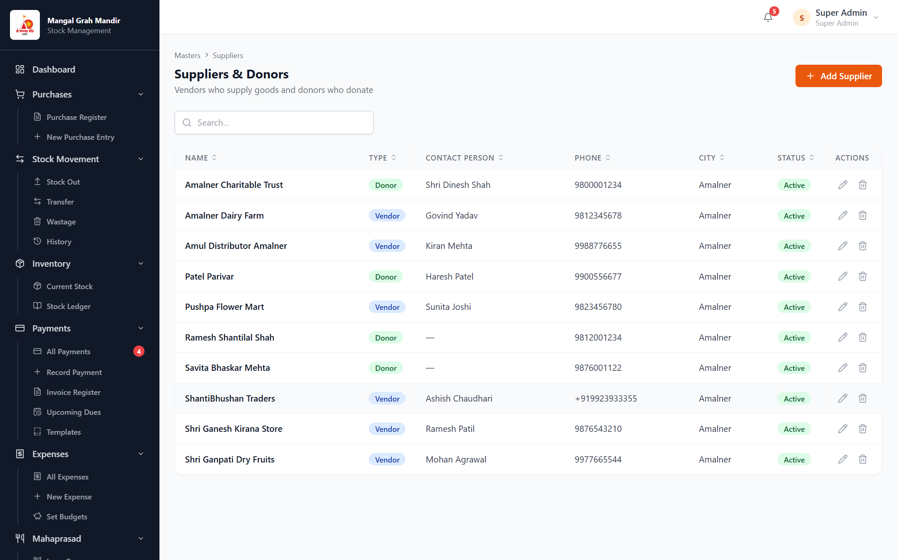
Administration
Manage staff accounts, what each role can do, the activity log, and system settings.
Who uses it: Administrator / super admin only.
12.1 Users
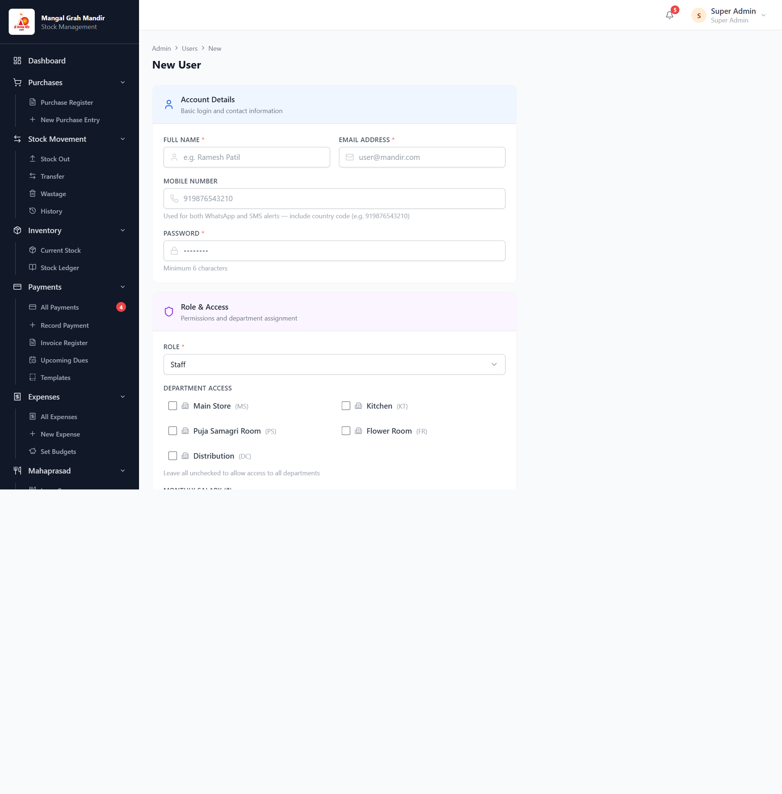
- Fill the Full Name, Email Address, optional Mobile Number, and a Password (at least 6 characters; only needed when creating).
- Assign a Role. For non-admin roles, tick the Department Access the user is allowed to work in.
- Optionally set Monthly Salary, and turn on Can Approve Asset Requests and/or Can Approve Payments for trustees.
- Click Create User.
12.2 Roles, Audit Log & Settings
| Screen | Use |
|---|---|
| Roles | Create roles and tick exactly which permissions each role has (Users, Masters, Transactions, Reports, Assets, Donations, Payments, Mahaprasad). |
| Audit Log | A complete, read-only record of who did what and when. Filter by user, date, entity and action; click a row to see the before/after change. |
| Settings | Temple details, WhatsApp & SMS alerts, stock alert rules, 80G registration, asset borrow limits, and Mahaprasad pricing (price per plate by day, daily cap, coupon validity, printer). |
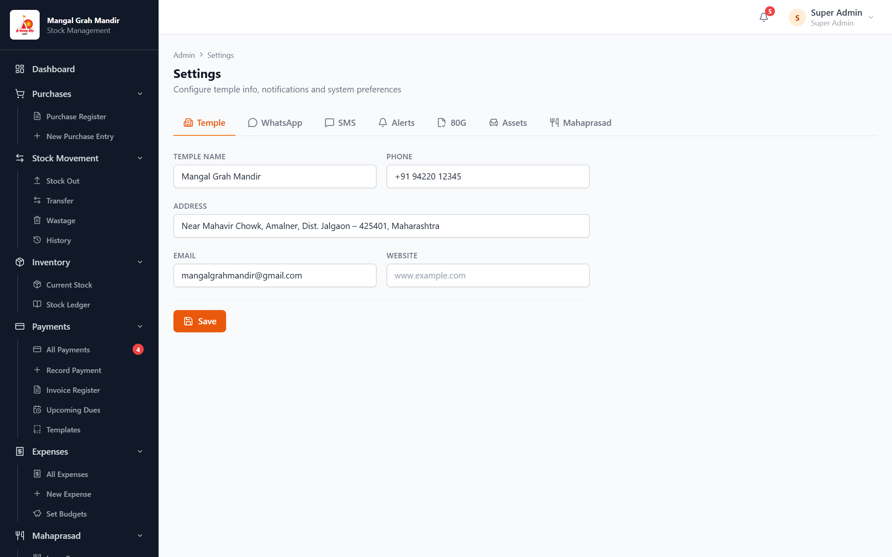
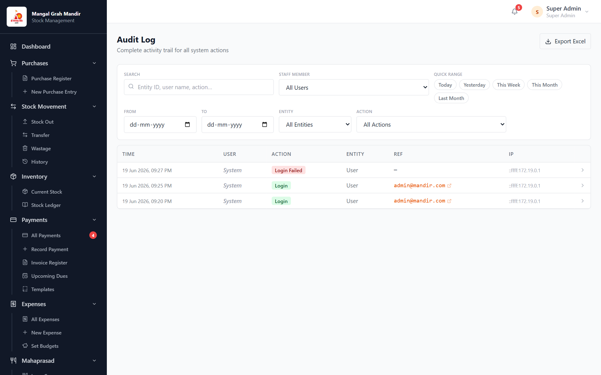
My Account
Your personal profile and password.
Who uses it: Everyone.
- Click your name in the top-right corner to open the menu.
- Profile — view your details and role.
- Change Password — enter your current password and the new one (at least 6 characters) twice.
- Logout — always log out on shared computers.
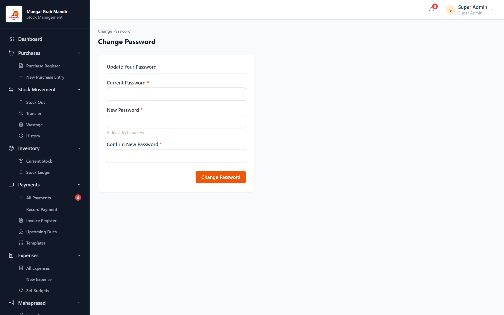
Roles & Permissions
The system controls what each person can see and do through their role. If a menu or button is missing, it is because your role does not include that permission — ask the administrator.
How it works
- Each user has one role (e.g. Store Manager, Kitchen Staff, Trustee, Viewer).
- A role is a set of permissions grouped by area: Masters, Transactions, Reports, Assets, Donations, Payments, Mahaprasad, Users.
- Each area can allow read (view), write/create (add & edit), delete, approve, or manage.
- Two special powers are set per user, not per role: Can Approve PaymentsCan Approve Asset Requests
- Non-admin users can also be limited to certain departments.
Typical roles (as set up at your temple)
| Role | Typically can… |
|---|---|
| Super Admin / Admin | Everything, including users, roles and settings. |
| Store Manager | Purchases, stock, inventory, masters, record payments — and approve payments if the flag is on. |
| Trustee | View and approve payments/expenses; oversight and reports. |
| Kitchen Staff | Mahaprasad counter and redeem, stock out for kitchen. |
| Puja Staff | Stock out for puja, view inventory. |
| Viewer | Read-only access to dashboards and reports. |
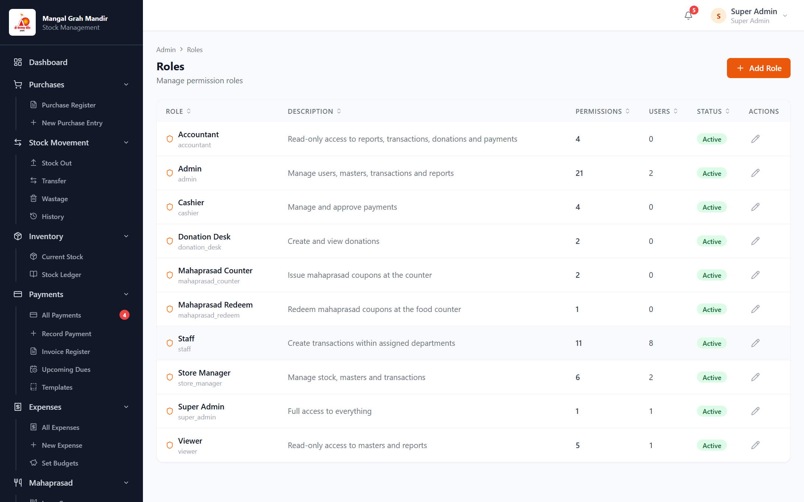
Mangal Grah Mandir — Stock Management System • User Manual v1.0
For help, contact your system administrator.